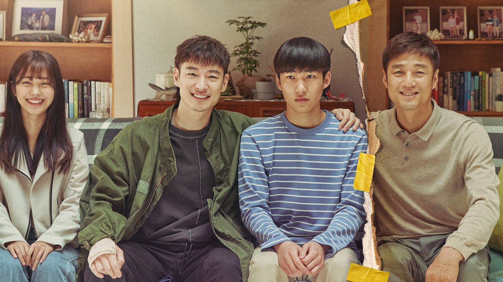
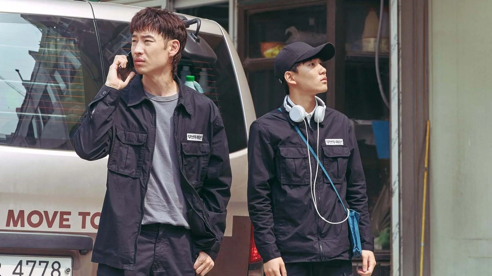
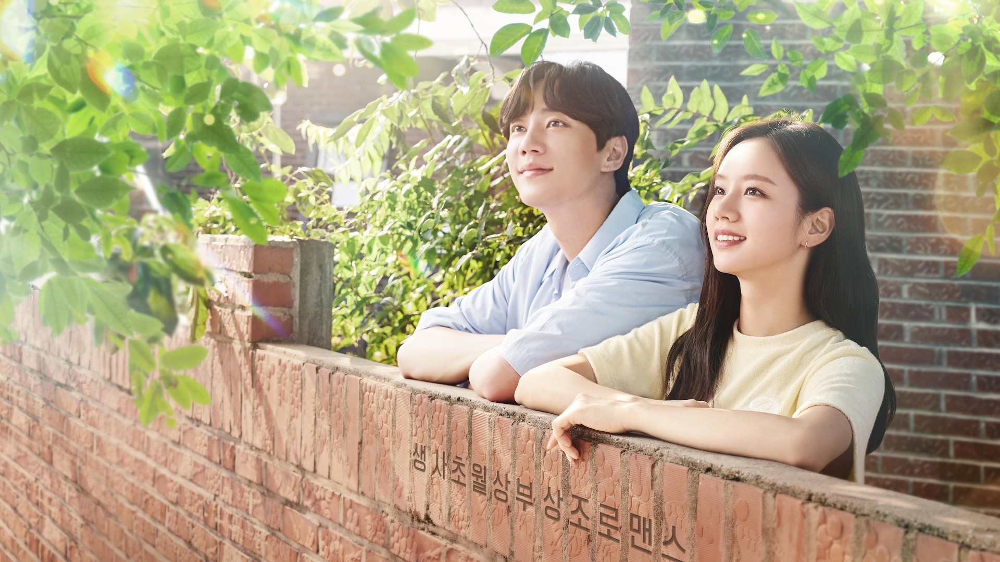
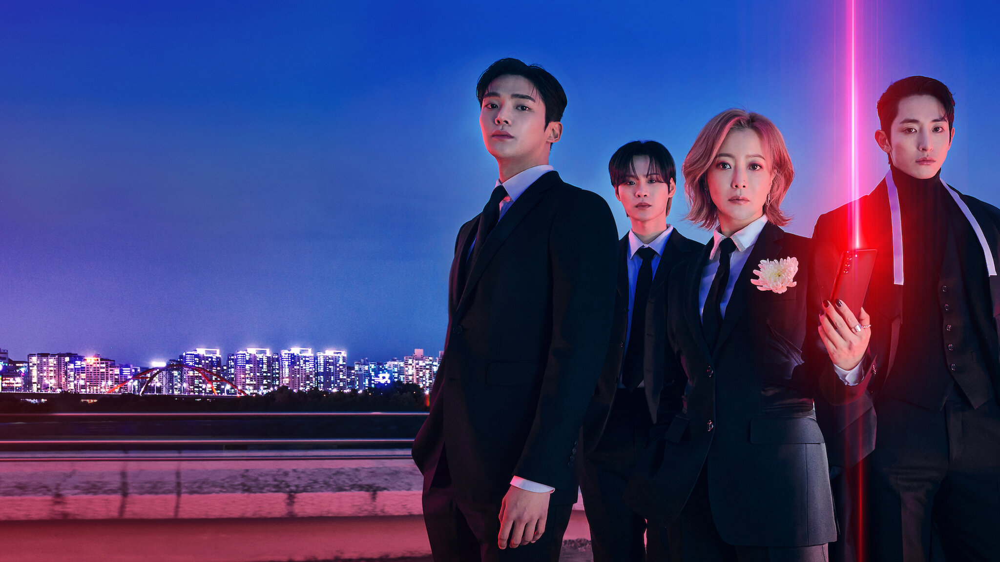

If you need a good cry, watch these 5 k-dramas

Intro
Have you ever had those moments when all you want is a show that will completely break your heart — and yet you need it anyway? If so, I've got the perfect list for you. From second chances to time travel, these five K-dramas will definitely mess with your emotions.
K-dramas
Moon Lovers: Scarlet Heart Ryeo (2016)
Across the 20 episodes of Moon Lovers, we follow the story of Go Ha-jin, a woman from the 21st century who, after a solar eclipse, is transported to the Goryeo dynasty and wakes up in the body of the young Hae-Soo. As the story develops, Hae-Soo finds herself unintentionally drawn into palace politics and the rivalry among the princes as they fight for the throne.
Episodes: 20 | Network: SBS TV | Genre: Fantasy, Romance, Melodrama, Historical Fiction
Hi Bye, Mama! (2020)
The story follows Cha Yu-ri, a woman who died in a tragic car accident while she was pregnant. Five years later, she is given a chance to return to life for 49 days to reconnect with her daughter and her husband. If she manages to reclaim her place in their lives, she can become human again. But her husband has remarried, and now Yu-ri must choose between her own destiny or his happiness.
Episodes: 16 | Network: tvN | Genre: Fantasy, Tragicomedy, Melodrama
Move To Heaven (2021)

The young Geu-ru and his ex-convict uncle, Sang-gu, meet for the first time after the sudden death of Geu-ru’s father. Together, they manage the family business, which specializes in organizing the belongings of people who have passed away, uncovering their untold stories. The drama explores themes of grief, love, forgiveness, and the meaning of life through the memories left behind.
Episodes: 10 | Network: Netflix | Genre: Drama
May I Help You? (2022)

This K-drama is a fantasy romance about Baek Dong-Joo, a funeral director with the ability to speak to the dead and who must fulfill the final wishes of twenty-one spirits, and Kim Jib-Sa, a man who runs errands at his uncle's company, “A Dime A Job”. Together, they help the deceased with their last requests while exploring themes like grief and the value of life.
Episodes: 16 | Network: MBC TV | Genre: Fantasy, Romantic comedy, Drama
Tomorrow (2022)

The story follows Choi Joon-Woong, a young man struggling to find a job despite all his efforts. After an unexpected accident, he crosses paths with the grim reapers Koo-Ryeon and Lim Ryung-Gu, who work in a team dedicated to stopping people from taking their own lives. Joon Woong ends up joining them, and through their missions, he begins to rediscover his purpose.
Episodes: 16 | Network: MBC TV | Genre: Fantasy, Drama
Final thoughts
If your pillow ends up soaked in tears… well, don’t say I didn’t warn you. But trust me, every tear is worth it.